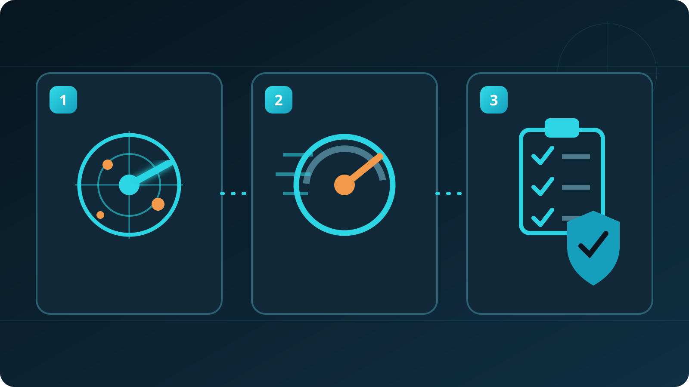
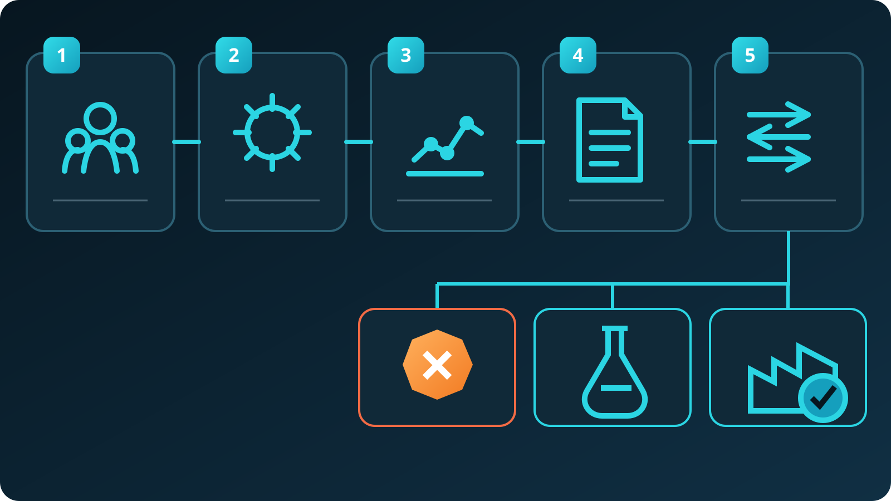

Находить спрос раньше
Закупки, инвестиционные проекты и расширение производств превращаются в квалифицированные возможности.
STOCH уже умеет подбирать, поставлять и запускать сложное оборудование. Я предлагаю усилить коммерческую часть: раньше замечать спрос, быстрее готовить вводные для инженера и системно вести следующий шаг по сделке.

STOCH уже умеет подбирать, поставлять и запускать сложное оборудование. Я предлагаю усилить коммерческую часть: раньше замечать спрос, быстрее готовить вводные для инженера и системно вести следующий шаг по сделке.
Закупки, инвестиционные проекты и расширение производств превращаются в квалифицированные возможности.
Письмо, ТЗ и вложения превращаются в инженерно проверяемый brief с отмеченными пробелами.
У каждой активной возможности появляются владелец, действие, дата и причина паузы.

Рыночный сигнал → профиль предприятия → RFQ / ТЗ → проверка инженера → предложение → CRM → накопление знаний.

Исследование, квалификация, подготовка данных, CRM-логика и метрики.
Техническая применимость, окончательный подбор, цена, срок и обязательства перед клиентом.
У компании уже есть техническая экспертиза, продуктовый каталог, ПНР и сервис. AI не заменяет эту основу: он увеличивает коммерческую пропускную способность вокруг неё.
Закупка → проверка категории и требований → роли ЛПР → действие Go / No-Go.
Запрос клиента → структура параметров → недостающие данные → материал для технолога.
Полная логика предложения: коммерческая гипотеза, архитектура, два примера, диагностика и путь к MVP.
Полный контекст предложения, границы ответственности, метрики, риски и следующий шаг.
Предлагается провести 45-минутное рабочее интервью, выбрать один коммерческий процесс и проверить его на 3-5 реальных кейсах.

Предлагается провести 45-минутное рабочее интервью, выбрать один коммерческий процесс и проверить его на 3-5 реальных кейсах.
Обсудить возможный MVP